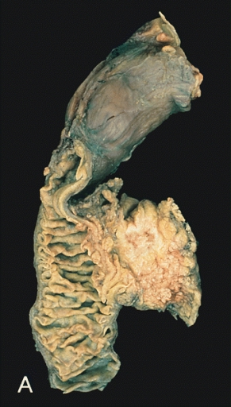
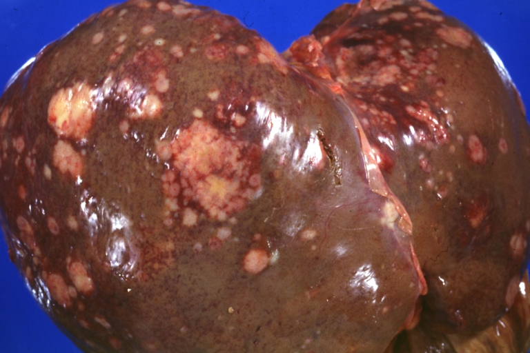
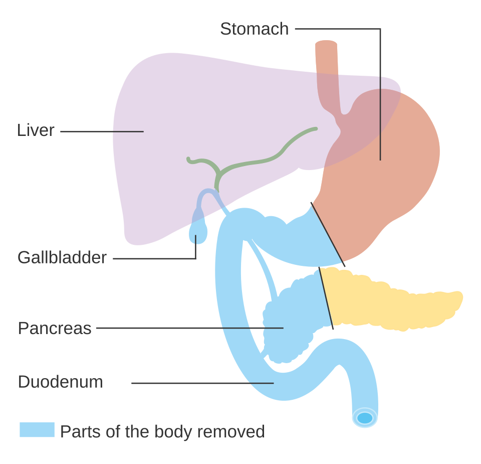
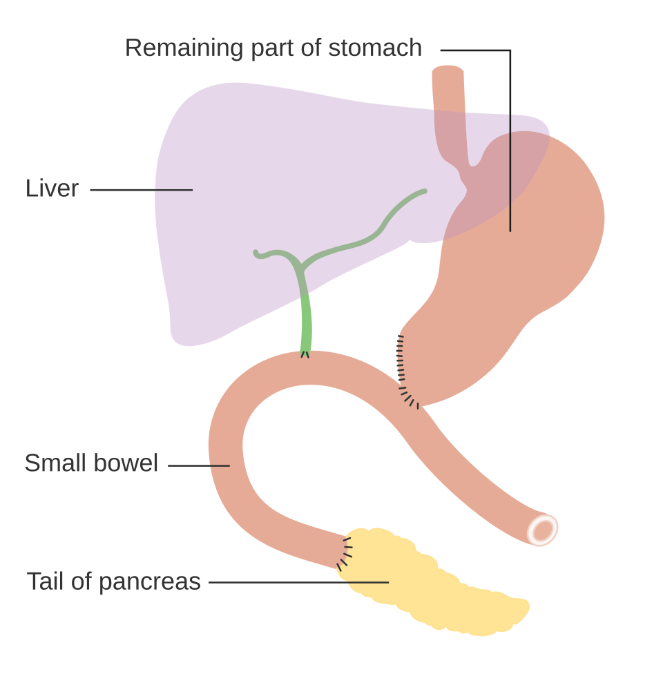

גידולי לבלב
אדנוקרצינומה של הלבלב מההופעה הקלינית ועד ניתוח וויפל. בנוסף, בקצרה: גידולים נוירואנדוקריניים
בסוף המפגש תדעו
- לזהות את ההופעה הקלינית של סרטן בראש הלבלב ואת גורמי הסיכון שלו
- לבנות בירור נכון: קודם CT בפרוטוקול לבלב, אחר כך אבחנה רקמתית וניקוז
- לסווג גידול לפי היחס לכלי הדם: נתיח, גבולי, מתקדם מקומית או גרורתי
- להסביר למה טיפול טרום-ניתוחי (ניאואדג׳ובנטי) הפך לגישה מרכזית
- לתאר את ניתוח וויפל ואת כריתת הלבלב הדיסטלית. להכיר את הסיבוכים העיקריים אחריהם
- להכיר בקצרה את הגידולים הנוירואנדוקריניים של הלבלב ומתי מנתחים אותם
סרטן הלבלב במספרים
גורמי סיכון נרכשים
- עישון: סיכוי גבוה פי 1.74
- השמנה (BMI מעל 30): פי 1.72. גם שתייה כבדה של אלכוהול
- סוכרת חדשה עם ירידה במשקל: סיכון גבוה פי 6.75. סימן אזהרה במבוגר
סיכון תורשתי
- תסמונות שד-שחלה (BRCA1, BRCA2, PALB2), מלנומה משפחתית (CDKN2A), פויץ-ייגרס
- דלקת לבלב תורשתית (PRSS1): סיכון של 50% עד גיל 75
- לכל חולה: היסטוריה משפחתית מלאה וייעוץ גנטי, בכל גיל ובכל שלב
הלבלב ושכניו

👆 לחצו על אזור בציור כדי לקרוא עליו
יושב בתוך לולאת ה-C של התריסריון. כאן נמצאים רוב הגידולים. לכן הסימן הראשון הוא לעיתים קרובות צהבת: הגידול לוחץ על צינור המרה שעובר בתוך הראש. הניתוח: וויפל.
הצוואר מונח ישירות מעל הווריד המזנטרי העליון. בוויפל חותכים את הלבלב בגובה הזה. הגוף חוצה את קו האמצע לפני אבי העורקים, קרוב לגזע הצליאק ולעורק הכבד. לכן גידול בגוף הוא לעיתים קרובות מתקדם מקומית.
מסתיים בשער הטחול. גידול בזנב או בגוף הדיסטלי מטופל בכריתה דיסטלית, לרוב יחד עם הטחול.
לולאת ה-C שעוטפת את הראש. בוויפל מוציאים אותו יחד עם ראש הלבלב. גידול גדול בראש יכול לחסום אותו ולגרום להקאות קשות.
יורד מאחורי התריסריון אל תוך ראש הלבלב. חסימה שלו בגידול גורמת לצהבת שקטה והדרגתית. בוויפל חותכים אותו מעל צינור כיס המרה. כיס המרה יוצא עם הדגימה.
עובר מאחורי צוואר הלבלב ומצטרף לווריד הטחול ליצירת הווריד השערי. מגע של הגידול בווריד עדיין מאפשר ניתוח אם אפשר לכרות ולשחזר אותו.
מגע של עד 180 מעלות מהיקף העורק: מחלה גבולית. עטיפה של יותר מ-180 מעלות: מתקדמת מקומית. בשלב האחרון של הוויפל מפרידים את הדגימה מהדופן הימנית שלו.
עורק הכבד המשותף נותן את העורק הגסטרודואודנלי, שמספק את ראש הלבלב. בוויפל קושרים את הגסטרודואודנלי ומכסים את הגדם. עטיפה של גזע הצליאק ביותר מ-180 מעלות: מחלה מתקדמת מקומית.
בכריתה דיסטלית אפשר לפעמים לשמר אותו: מפרידים את הלבלב מכלי הטחול, או חותכים את כלי הטחול ומשאירים את כלי הקיבה הקצרים.
הלבלב, התריסריון והעורקים והוורידים שסביבם, מבט מלפנים · Sobotta, Atlas and Text-book of Human Anatomy (1906), איור 393 (נחלת הכלל)
מאיפה הגידול מגיע
נגעים מקדימים
- PanIN (נגע תוך-אפיתליאלי מיקרוסקופי בצינורות): המקור לרוב הגידולים. נמצא ביותר מ-75% מהלבלבים בנתיחות. רובם לא יתקדמו
- IPMN: פחות מ-10% מהגידולים. ציסטה שמחוברת לצינורות
- MCN: הנדיר ביותר. בנשים, בגוף ובזנב, עם סטרומה דמוית שחלה
מה מיוחד בגידול הזה
- מוטציה ב-KRAS ביותר מ-90%. גם TP53 (50–70%), CDKN2A (40–60%) ו-SMAD4 (כשליש)
- סטרומה דסמופלסטית צפופה: פחות מ-10% מהתאים בגידול ממאירים
- גרורות בעיקר לכבד ולצפק. גרורות בריאות בלבד: פרוגנוזה טובה יותר
צהבת שקטה במטופל מבוגר
- רוב הגידולים בראש הלבלב. השלישייה: צהבת, כאב באפיגסטריום או בגב וירידה במשקל
- הצהבת הדרגתית ובלי כאב, לרוב בלי כולנגיטיס. שונה מאבן בצינור המרה: חדה, כואבת ולעיתים עם חום
- שלשול שומני (אי-ספיקה אקסוקרינית), גרד
- בחילות והקאות קשות: חסימה של מוצא הקיבה
- כ-40% מגיעים עם סוכרת חדשה וירידה במשקל
מה רואים ב-CT, בחדר הניתוח ובפתולוגיה



הסדר חשוב: קודם CT
הכול תלוי בכלי הדם
מגע (abutment): הגידול נוגע בעד 180 מעלות מהיקף כלי הדם. עטיפה (encasement): יותר מ-180 מעלות
למה טיפול לפני הניתוח?
היתרונות של טיפול מקדים
- טיפול מוקדם במיקרו-גרורות, שקיימות כנראה ברוב החולים
- חושף ביולוגיה אגרסיבית לפני ניתוח גדול
- אפשר לראות תגובה בגידול עצמו (גם ב-CA 19-9)
- בחירה טובה יותר של מי שירוויח מניתוח
מי לא מגיע לניתוח (כ-30%)
- כ-92% מהם: גרורות שהופיעו בזמן הטיפול. ניתוח לא היה עוזר להם
- כ-5%: מצב כללי שלא מאפשר ניתוח
- התקדמות מקומית בלבד: 3% או פחות
מחקרים שעיצבו את הגישה
טיפול לפני ואחרי הניתוח מול ניתוח ראשון, במחלה נתיחה וגבולית. הישרדות ל-5 שנים: 20.5% לעומת 6.5%
בזרוע הניתוח הראשון רק 51% (65 מתוך 128) קיבלו טיפול משלים כלשהו
כפי שמסוכם ב-Sabiston 22, פרק 93 עמ׳ 1407–1408130 חולים עם גידול נתיח בראש הלבלב. FOLFIRINOX לפני הניתוח מול ניתוח ראשון. לא נמצא הבדל בהישרדות
אבל: 21% לא הגיעו לניקוז מרה וטופלו בניתוח מיד. רק 46% קיבלו את כל הטיפול המתוכנן
כפי שמסוכם ב-Sabiston 22, פרק 93 עמ׳ 1408102 חולים. mFOLFIRINOX מול גמציטבין ונאב-פקליטקסל: שניהם בטוחים, בלי הבדל ביעילות (הישרדות לשנתיים 42% לעומת 49%)
כפי שמסוכם ב-Sabiston 22, פרק 93 עמ׳ 1408חציון הישרדות של 54 חודשים עם mFOLFIRINOX אחרי ניתוח. אבל במחקר נכללו רק מי שהחלימו היטב מהניתוח. לכן קשה להכליל
כפי שמסוכם ב-Sabiston 22, פרק 93 עמ׳ 1407ניתוח וויפל (pancreaticoduodenectomy)
מה מוציאים
- ראש הלבלב, התריסריון, כיס המרה וצינור המרה, עם או בלי האנטרום של הקיבה
- לפני החתך: לפרוסקופיה אבחנתית. בעד 10% מוצאים גרורות קטנות שלא נראו בהדמיה
שישה שלבים
השחזור: שלושה חיבורים
- לבלב-מעי: צינור הלבלב לרירית הג׳ג׳ונום. בלבלב רך: שתי שכבות
- מרה-מעי: כ-10 ס״מ אחריו
- קיבה-מעי: לפני המעי הגס, לפחות 50 ס״מ אחרי חיבור המרה (פחות ריפלוקס של מרה)
- בסוף מכסים את גדם הגסטרודואודנלי ברצועה העגולה של הכבד: הגנה מפני מפרצת מדממת אם יש דליפה מהלבלב
מה יוצא ומה מחברים


איזה ניתוח, לפי מיקום הגידול
שלושה סיבוכים שכל סטודנט מכיר
גידול אחר לגמרי
- גדלים לאט. אין בהם את המוטציות של אדנוקרצינומה (KRAS, TP53)
- ב-CT: נצבעים חזק בשלב העורקי. לכן צריך CT דו-שלבי. גידול לא תפקודי מתגלה לרוב במקרה או כשהוא כבר גדול ומתקדם
- DOTA-PET: מנצל את קולטני הסומטוסטטין שיש לרוב הגידולים
- EUS עם ביופסיה לקביעת Ki-67
מי תפקודי
- אינסולינומה: השכיח מהתפקודיים. שלישיית וויפל: תסמיני היפוגליקמיה בצום, סוכר נמוך ושיפור עם מתן סוכר. ביותר מ-90%: בודד, מקומי וקטן מ-2 ס״מ
- גסטרינומה: כיבים חוזרים, ריפלוקס ושלשול (זולינגר-אליסון). רובם בתריסריון, בתוך "משולש הגסטרינומה". 20–30% עם MEN1
- נדירים: גלוקגונומה, VIPoma, סומטוסטטינומה
מתי מנתחים
מחקרים שכדאי להכיר
375 חולים עם מחלה נתיחה או גבולית ב-19 מרכזים בהולנד. 8 מחזורי FOLFIRINOX מול כימו-רדיותרפיה על בסיס גמציטבין. חציון הישרדות: 21.9 לעומת 21.3 חודשים, בלי הבדל מובהק
Janssen QP, van Dam JL, et al. Lancet Oncol 2025;26(10):1346-56770 חולים. NALIRIFOX מול גמציטבין ונאב-פקליטקסל כקו ראשון: חציון הישרדות 11.1 לעומת 9.2 חודשים (HR 0.83)
Wainberg ZA et al. Lancet 2023;402:1272-81258 חולים עם סרטן נתיח בגוף או בזנב, 35 מרכזים. כריתה בשוליים נקיים: 73% לעומת 69% בניתוח הפתוח (לא נחות). אותו מספר בלוטות ואותה הישרדות
Korrel M et al. Lancet Reg Health Eur 2023;31:100673חמישה דברים לקחת למחלקה
- צהבת הדרגתית בלי כאב, ירידה במשקל או סוכרת חדשה במבוגר: לחשוב על סרטן בראש הלבלב
- קודם CT בפרוטוקול לבלב, אחר כך EUS עם ביופסיה וסטנט מתכתי. לא להתחיל ב-ERCP
- השלב נקבע לפי היחס לכלי הדם: עד 180 מעלות מגע, מעל 180 עטיפה
- רוב החולים חולים במחלה מערכתית: טיפול מוקדם לפני הניתוח הוא חלק מרכזי מהתוכנית
- אחרי וויפל: לחפש פיסטולה, עיכוב בהתרוקנות הקיבה ודימום. דימום קטן מהנקז או מהפה ביום 7–14 הוא מבשר